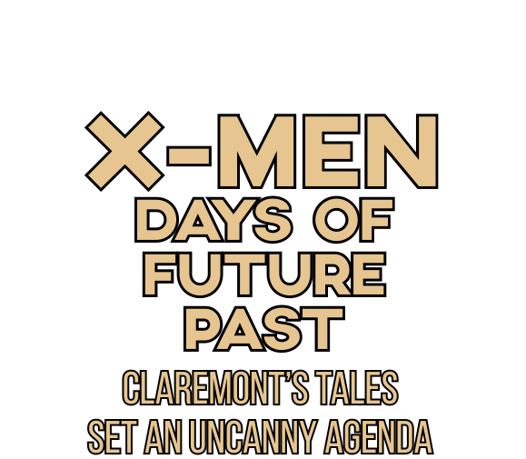
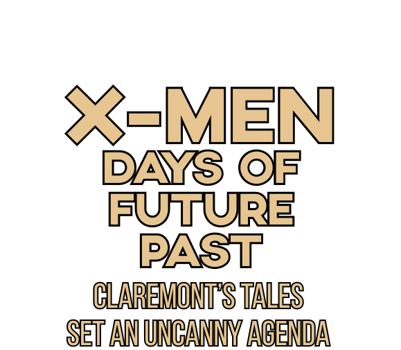

It’s probably no coincidence that television reached a new level of critical respectability after its most serious shows embraced serialized storytelling, both as a way to hook audiences and a way to develop more novelistic depth. It’s an approach Marvel Comics already had figured out in the 1960s.
When writer-editor Stan Lee and his bullpen of artists started introducing cliffhangers, romantic melodrama and long-simmering subplots into superhero comics, Marvel suddenly became hip and popular, and was even written about in mainstream publications, long before the “comics aren’t for kids anymore” headlines of the 1980s.
Yet even more than Lee, the Marvel writer who best played to the strengths of serialization was Chris Claremont. In 1975, when Claremont was still in his mid-20s, he took the assignment to write for Marvel’s revival of The X-Men: a team of superpowered, socially scorned “mutants” that in their first incarnation in the 1960s had never been popular enough with Marvel readers to thrive as an ongoing title.
Under Claremont’s stewardship — aided by a string of young artists who also made their reputations on the book — The Uncanny X-Men became a chart-topper, spinning fan-favorite story lines that have since been adapted into the various animated X-Men cartoons, and nodded to in the recent blockbuster X-Men movies.
One of those story lines — the two-part “Days of Future Past,” co-created with artist John Byrne — is about to become one of those blockbuster movies, directed by Bryan Singer, due to be released in the summer of 2014. (Also, this summer’s The Wolverine, from director James Mangold, is based on a miniseries he wrote about the adamantium-clawed mutant.)

What did Claremont do that was so different from other comic book writers at that time — and even other Marvel writers? Consider just one issue from Claremont’s run: The Uncanny X-Men No. 118, released in 1979. The story begins with a handful of X-Men on a ship heading into Japan, where they’ll soon fight alongside an old colleague, Sunfire, against a villain threatening to sink the entire country.
The rudiments of the plot are fairly typical. What matters more is that by this point in the larger story, the X-Men had recently survived a killer circus, their arch-nemesis Magneto and a trek through the prehistoric Savage Land, all while separated from their mentor Professor X; and for the last couple of stories, they’d been mistakenly convinced that half of their members had been killed.
After the team left Japan, they’d end up in another squabble in Canada, and not until The Uncanny X-Men No. 122 would they return home. Not until No. 125 would they learn that their friends were still alive. Not until No. 129 would they be reunited with Professor X — at which point another desperate, long-running crisis began.
In short: Claremont never let his readers catch their breath. The X-Men tumbled headlong from one white-knuckle adventure to the next, losing and gaining members along the way, just out of circumstance. If fans picked up an issue and saw the X-Men in Japan, they knew that Claremont had just opened another door that would lead his heroes further and further away from safety and stability.
Rarely was there a beginning or an end to a Claremont-penned X-Men saga. The momentum — from issue to issue and year to year — was relentless.

Again, Claremont didn’t invent this method of storytelling. Stan Lee and Jack Kirby revolutionized superhero comics by using just this approach on The Fantastic Four in the early ’60s, and then Lee and Steve Ditko perfected it on The Amazing Spider-Man. (And they all owe a debt to early 20th century newspaper comics like Little Orphan Annie, which in turn owes Charles Dickens and other Victorian-era serializers.)
But Claremont understood these methods in a way that few others ever have, and he amplified them by stretching stories out for years, keeping readers invested in outcomes that were long in coming. More importantly: He started doing all this in the ’70s, at a time when the superhero comics getting the most attention were dreary stabs at social relevance, grappling with drugs and war and the disillusionment of youth.
Claremont’s X-Men stories did deal with bigotry, and his multicultural team was itself an understated plea for tolerance, but during The Uncanny X-Men’s rise in popularity, the series was mostly just entertaining, far beyond its contemporaries. With his X-Men comics, Claremont was making a combination of Close Encounters of the Third Kind and The Empire Strikes Back while everyone else was making Soylent Green and Flash Gordon.